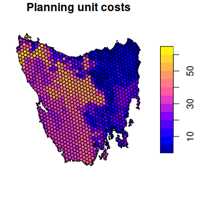
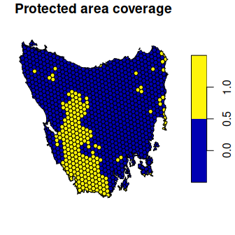
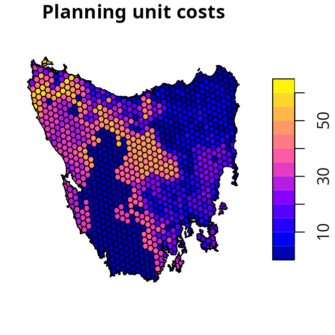
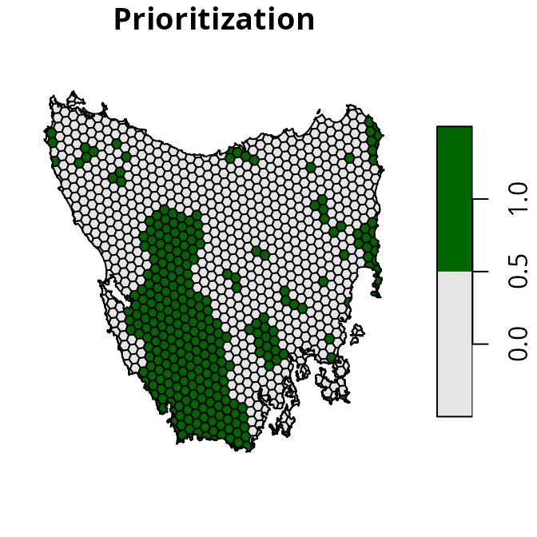
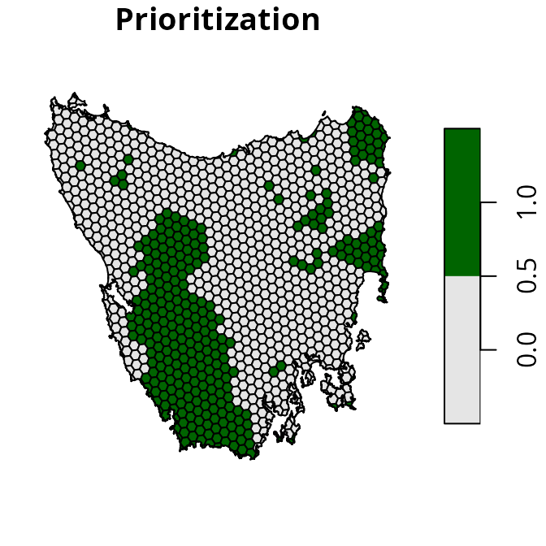
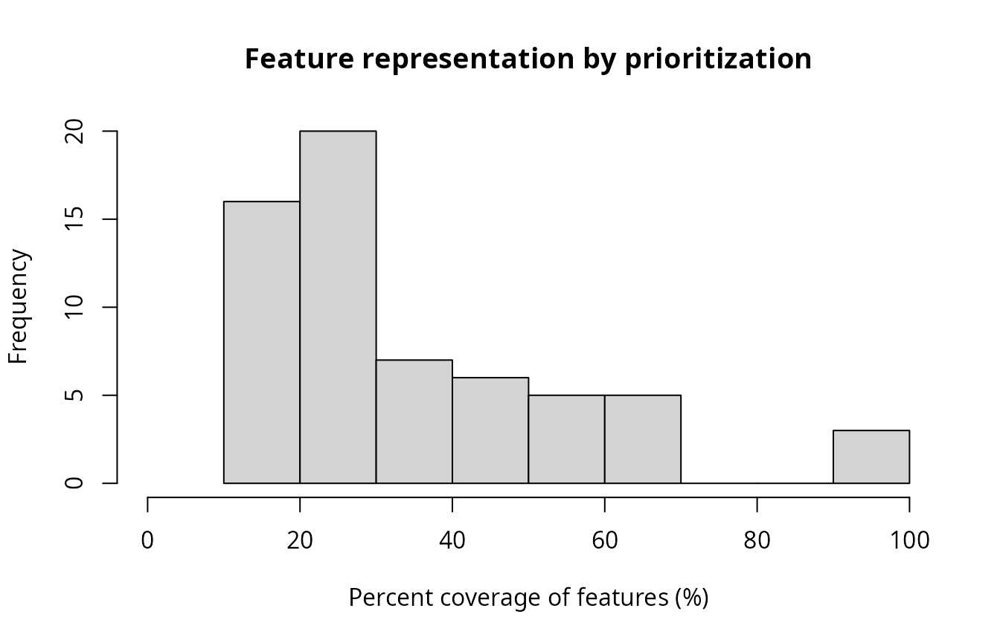
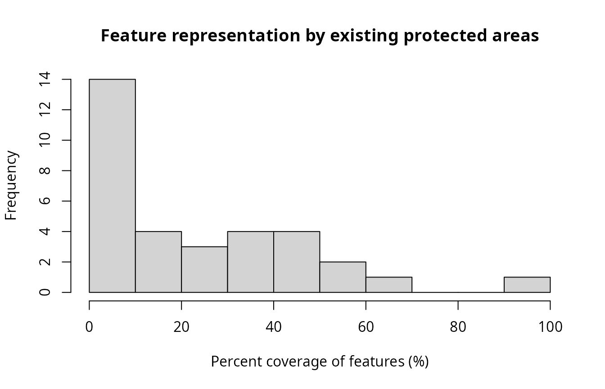

Introduction
The aim of this tutorial is to provide a short introduction to the prioritizr R package. It is also intended to help conservation planners familiar the Marxan decision support tool (Ball et al. 2009) start using the package for their work.
Data
Let’s load the packages and data used in this tutorial. Since this tutorial uses data from the prioritizrdata R package, please ensure that it is installed. The data used in this tutorial were obtained from the Introduction to Marxan course. Specifically, the data were originally a subset of a larger spatial prioritization project performed under contract to Australia’s Department of Environment and Water Resources (Klein et al. 2007).
# load packages
library(prioritizrdata)
library(prioritizr)
library(vegan)
library(cluster)
# load planning unit data
data(tas_pu)
# load feature data
data(tas_features)The tas_pu object contains planning units represented as spatial polygons (i.e., a SpatialPolygonsDataFrame object). This object has three columns that denote the following information for each planning unit: a unique identifier (id), unimproved land value (cost), and current conservation status (locked_in). Planning units that have at least half of their area overlapping with existing protected areas are denoted with a locked in value of 1, otherwise they are denoted with a value of 0. If you are familiar with the Marxan decision support tool, then you will notice that some of these columns are formatted similar conventions.
Now, let’s have a look at the planning unit data. We can see that the planning units correspond to hexagonal land parcels. We can also see that is a clear spatial pattern in the cost and conservation status the planning units.
# print planning unit data
print(tas_pu)## class : SpatialPolygonsDataFrame
## features : 1130
## extent : 298809.6, 613818.8, 5167775, 5502544 (xmin, xmax, ymin, ymax)
## crs : +proj=utm +zone=55 +south +datum=WGS84 +units=m +no_defs +ellps=WGS84 +towgs84=0,0,0
## variables : 5
## names : id, cost, status, locked_in, locked_out
## min values : 1, 0.192488262910798, 0, 0, 0
## max values : 1130, 61.9272727272727, 2, 1, 0
# plot map of planning unit coverage by protected areas
plot(st_as_sf(tas_pu[, "locked_in"]), main = "Protected area coverage")
The tas_features object describes the spatial distribution of the features. Specifically, the feature data are expressed as a stack of 62 rasters (i.e., a RasterStack object). Each layer in the stack corresponds to one of 62 different vegetation communities. To describe the spatial distribution of a given vegetation community, each layer contains a spatially referenced grid of rectangular cells and each of these grid cells is associated with information on the distribution of the a given vegetation community. Specifically, these grid cells are assigned values that indicate if a given vegetation community is present (using value of 1) or absent (using value of 0) within the spatial extent of each grid cell.
Next, let’s examine the feature data. Here we will only plot the first four features as an example. The pixel values denote the presence (denoted by a value of 1) or absence (denoted by a value of zero) of each feature within the extent of the study area.
# print planning unit data
print(tas_features)## class : RasterStack
## dimensions : 398, 359, 142882, 62 (nrow, ncol, ncell, nlayers)
## resolution : 1000, 1000 (x, y)
## extent : 288801.7, 647801.7, 5142976, 5540976 (xmin, xmax, ymin, ymax)
## crs : +proj=utm +zone=55 +south +datum=WGS84 +units=m +no_defs +ellps=WGS84 +towgs84=0,0,0
## names : tas_features.1, tas_features.2, tas_features.3, tas_features.4, tas_features.5, tas_features.6, tas_features.7, tas_features.8, tas_features.9, tas_features.10, tas_features.11, tas_features.12, tas_features.13, tas_features.14, tas_features.15, ...
## min values : 0, 0, 0, 0, 0, 0, 0, 0, 0, 0, 0, 0, 0, 0, 0, ...
## max values : 1, 1, 1, 1, 1, 1, 1, 1, 1, 1, 1, 1, 1, 1, 1, ...
# plot map of the first four vegetation classes
plot(tas_features[[1:4]], main = paste("Feature", 1:4))
The planning units in this tutorial are stored as spatial polygons. Although spatial polygons provide considerable flexibility in the shape and size of the planning units, such flexibility comes at a cost. This is because the spatial data processing routines needed to combine spatial polygon data and raster data for optimization can be very computationally expensive (e.g., calculating zonal statistics). As a consequence, we generally recommend using raster-based planning unit data where possible to reduce processing time. Another strategy is to complete spatial data processing routines manually using other software (e.g., ESRI ArcGIS) and use the pre-processed data directly with the prioritizr R package.
Problem formulation
Now we will formulate a conservation planing problem. To achieve this, we first specify which objects contain the planning unit and feature data (using the problem() function). Next, we specify that we want to use the minimum set objective function (using the add_min_set_objective() function). This objective function indicates that we wish to minimize the total cost of planning units selected by the prioritization. We then specify boundary penalties reduce spatial fragmentation in the resulting prioritization (using the add_boundary_penalties() function; see the Calibrating trade-offs vignette for details on calibrating the penalty value). We also specify representation targets to ensure the resulting prioritization provides adequate coverage of each vegetation community (using the add_relative_targets() function). Specifically, we specify targets to ensure at least 17% of the spatial extent of each vegetation community (based on the Aichi Target 11). Additionally, we set constraints to ensure that planning units predominately covered by existing protected areas are selected by the prioritization (using the add_locked_in_constraints() function). Finally, we specify that the prioritization should either select – or not select – planning units for prioritization (using the add_binary_decisions() function).
# build problem
p1 <- problem(tas_pu, tas_features, cost_column = "cost") %>%
add_min_set_objective() %>%
add_boundary_penalties(penalty = 0.005) %>%
add_relative_targets(0.17) %>%
add_locked_in_constraints("locked_in") %>%
add_binary_decisions()
# print the problem
print(p1)## Conservation Problem
## planning units: SpatialPolygonsDataFrame (1130 units)
## cost: min: 0.19249, max: 61.92727
## features: tas_features.1, tas_features.2, tas_features.3, ... (62 features)
## objective: Minimum set objective
## targets: Relative targets [targets (min: 0.17, max: 0.17)]
## decisions: Binary decision
## constraints: <Locked in planning units [257 locked units]>
## penalties: <Boundary penalties [edge factor (min: 0.5, max: 0.5), penalty (0.005), zones]>
## portfolio: default
## solver: defaultPrioritization
We can now solve the problem formulation (p1) to generate a prioritization (using the solve() function). The prioritizr R package supports a range of different exact algorithm solvers, including Gurobi, IBM CPLEX, CBC, Rsymphony, and lpsymphony. Although there are benefits and limitations associated with each of these different solvers, they should return similar results. Note that you will need at least one solver installed on your system to generate prioritizations. Since we did not specify a solver when building the problem, the prioritizr R package will automatically select the best available solver installed. We recommend using the Gurobi solver if possible, and have used it for this tutorial (see the Gurobi Installation Guide vignette for installation instructions). After solving the problem, the prioritization will be stored in the solution_1 column of the s1 object.
# solve problem
s1 <- solve(p1)## Gurobi Optimizer version 9.5.1 build v9.5.1rc2 (linux64)
## Thread count: 4 physical cores, 8 logical processors, using up to 1 threads
## Optimize a model with 6358 rows, 4278 columns and 14496 nonzeros
## Model fingerprint: 0xc7d1c688
## Variable types: 0 continuous, 4278 integer (4278 binary)
## Coefficient statistics:
## Matrix range [2e-06, 4e+01]
## Objective range [5e-01, 1e+03]
## Bounds range [1e+00, 1e+00]
## RHS range [1e-01, 1e+02]
## Found heuristic solution: objective 37703.827706
## Found heuristic solution: objective 27817.085072
## Presolve removed 2077 rows and 1375 columns
## Presolve time: 0.05s
## Presolved: 4281 rows, 2903 columns, 9594 nonzeros
## Found heuristic solution: objective 24454.499456
## Variable types: 0 continuous, 2903 integer (2903 binary)
## Found heuristic solution: objective 23413.987477
## Root relaxation presolved: 4281 rows, 2903 columns, 9594 nonzeros
##
##
## Root relaxation: objective 1.955605e+04, 1793 iterations, 0.13 seconds (0.19 work units)
##
## Nodes | Current Node | Objective Bounds | Work
## Expl Unexpl | Obj Depth IntInf | Incumbent BestBd Gap | It/Node Time
##
## 0 0 19556.0531 0 1615 23413.9875 19556.0531 16.5% - 0s
## H 0 0 23045.733138 19556.0531 15.1% - 0s
## H 0 0 22977.771015 19556.0531 14.9% - 0s
## 0 0 19836.0586 0 1855 22977.7710 19836.0586 13.7% - 0s
## H 0 0 21702.297403 19836.0586 8.60% - 0s
##
## Cutting planes:
## Gomory: 2
## Cover: 5
## MIR: 4
## GUB cover: 1
## Zero half: 2
## RLT: 10
##
## Explored 1 nodes (2393 simplex iterations) in 0.60 seconds (0.60 work units)
## Thread count was 1 (of 8 available processors)
##
## Solution count 7: 21702.3 22977.8 23045.7 ... 37703.8
##
## Optimal solution found (tolerance 1.00e-01)
## Best objective 2.170229740250e+04, best bound 1.983605855899e+04, gap 8.5993%
# plot map of prioritization
plot(st_as_sf(s1[, "solution_1"]), main = "Prioritization",
pal = c("grey90", "darkgreen"))
Feature representation
Let’s examine how well the vegetation communities are represented by existing protected areas and the prioritization.
# create column with existing protected areas
tas_pu$pa <- round(tas_pu$locked_in)
# calculate feature representation statistics based on existing protected areas
tc_pa <- eval_target_coverage_summary(p1, tas_pu[, "pa"])
print(tc_pa)## # A tibble: 62 × 9
## feature met total_amount absolute_target absolute_held absolute_shortf…
## <chr> <lgl> <dbl> <dbl> <dbl> <dbl>
## 1 tas_featur… FALSE 33.9 5.77 0.556 5.21
## 2 tas_featur… FALSE 170. 28.9 13.5 15.4
## 3 tas_featur… FALSE 24.0 4.08 2.00 2.08
## 4 tas_featur… FALSE 32.8 5.57 1.37 4.19
## 5 tas_featur… FALSE 24.8 4.21 0 4.21
## 6 tas_featur… FALSE 22.0 3.74 0 3.74
## 7 tas_featur… FALSE 16.4 2.78 0 2.78
## 8 tas_featur… FALSE 43.0 7.31 5.12 2.19
## 9 tas_featur… FALSE 388. 66.0 22.4 43.5
## 10 tas_featur… FALSE 14.5 2.47 0 2.47
## # … with 52 more rows, and 3 more variables: relative_target <dbl>,
## # relative_held <dbl>, relative_shortfall <dbl>
# calculate feature representation statistics based on the prioritization
tc_s1 <- eval_target_coverage_summary(p1, s1[, "solution_1"])
print(tc_s1)## # A tibble: 62 × 9
## feature met total_amount absolute_target absolute_held absolute_shortf…
## <chr> <lgl> <dbl> <dbl> <dbl> <dbl>
## 1 tas_featur… TRUE 33.9 5.77 5.97 0
## 2 tas_featur… TRUE 170. 28.9 43.8 0
## 3 tas_featur… TRUE 24.0 4.08 4.25 0
## 4 tas_featur… TRUE 32.8 5.57 6.37 0
## 5 tas_featur… TRUE 24.8 4.21 4.98 0
## 6 tas_featur… TRUE 22.0 3.74 7.00 0
## 7 tas_featur… TRUE 16.4 2.78 3.00 0
## 8 tas_featur… TRUE 43.0 7.31 8.12 0
## 9 tas_featur… TRUE 388. 66.0 70.8 0
## 10 tas_featur… TRUE 14.5 2.47 2.91 0
## # … with 52 more rows, and 3 more variables: relative_target <dbl>,
## # relative_held <dbl>, relative_shortfall <dbl>
# explore representation by existing protected areas
## calculate number of features adequately represented by existing protected
## areas
sum(tc_pa$met)## [1] 16
## summarize representation (values show percent coverage)
summary(tc_pa$relative_held * 100)## Min. 1st Qu. Median Mean 3rd Qu. Max.
## 0.000 0.000 4.845 13.909 16.995 58.488
## visualize representation (values show percent coverage)
hist(tc_pa$relative_held * 100,
main = "Feature representation by existing protected areas",
xlim = c(0, 100),
xlab = "Percent coverage of features (%)")
# explore representation by prioritization
## summarize representation (values show percent coverage)
summary(tc_s1$relative_held * 100)## Min. 1st Qu. Median Mean 3rd Qu. Max.
## 17.14 20.18 25.56 33.83 43.19 100.00
## calculate number of features adequately represented by the prioritization
sum(tc_s1$met)## [1] 62
## visualize representation (values show percent coverage)
hist(tc_s1$relative_held * 100,
main = "Feature representation by prioritization",
xlim = c(0, 100),
xlab = "Percent coverage of features (%)")
We can see that representation of the vegetation communities by existing protected areas is remarkably poor. For example, many of the vegetation communities have nearly zero coverage by existing protected areas. In other words, are almost entirely absent from existing protected areas. We can also see that all vegetation communities have at least 17% coverage by the prioritization – meaning that it meets the representation targets for all of the features.
Irreplaceability
After generating the prioritization, we can examine the relative importance of planning units selected by the prioritization. This can be useful to identify critically important planning units for conservation – in other words, places that contain biodiversity features which cannot be represented anywhere else – and schedule implementation of the prioritization. To achieve this, we will use the Ferrier metric (Ferrier et al. 2000).
# calculate irreplaceability
irrep_s1 <- eval_ferrier_importance(p1, s1["solution_1"])
print(irrep_s1)## class : SpatialPolygonsDataFrame
## features : 1130
## extent : 298809.6, 613818.8, 5167775, 5502544 (xmin, xmax, ymin, ymax)
## crs : +proj=utm +zone=55 +south +datum=WGS84 +units=m +no_defs +ellps=WGS84 +towgs84=0,0,0
## variables : 63
## names : tas_features.1, tas_features.2, tas_features.3, tas_features.4, tas_features.5, tas_features.6, tas_features.7, tas_features.8, tas_features.9, tas_features.10, tas_features.11, tas_features.12, tas_features.13, tas_features.14, tas_features.15, ...
## min values : 0, 0, 0, 0, 0, 0, 0, 0, 0, 0, 0, 0, 0, 0, 0, ...
## max values : 0.00701698358267939, 0.0066775439067078, 0.00248592654648536, 0.00594796984735507, 0.00219848915242862, 0.221777713215686, 0.00352460472775105, 0.00362070014565918, 0.00736044135306282, 0.00691379490000091, 0.225419698234888, 0.00465456428213494, 0.0025318990590772, 0.010045386228309, 0.00609443943530227, ...
# manually coerce values for planning units not selected in prioritization
# to NA, so that they are shown in white
irrep_s1$plot_total <- irrep_s1$total
irrep_s1$plot_total[s1$solution_1 < 0.5] <- NA_real_
# plot map of overall importance scores
plot(st_as_sf(irrep_s1[, "plot_total"]), main = "Overall importance")
Portfolios
Conservation planning exercises often involve generating multiple different prioritizations. This can help decision makers consider different options, and provide starting points for building consensus among stakeholders. To generate a range of different prioritizations given the same problem formulation, we can use portfolio functions. Here we will use the gap portfolio to generate 1000 solutions that are within 30% of optimality. Please note that you will need to have the Gurobi solver installed to use this specific portfolio. If you don’t have access to Gurobi, you could try using the shuffle portfolio instead (using the add_shuffle_portfolio() function).
# create new problem with a portfolio added to it
p2 <- p1 %>%
add_gap_portfolio(number_solutions = 1000, pool_gap = 0.2)
# print problem
print(p2)## Conservation Problem
## planning units: SpatialPolygonsDataFrame (1130 units)
## cost: min: 0.19249, max: 61.92727
## features: tas_features.1, tas_features.2, tas_features.3, ... (62 features)
## objective: Minimum set objective
## targets: Relative targets [targets (min: 0.17, max: 0.17)]
## decisions: Binary decision
## constraints: <Locked in planning units [257 locked units]>
## penalties: <Boundary penalties [edge factor (min: 0.5, max: 0.5), penalty (0.005), zones]>
## portfolio: Gap portfolio [number_solutions (1000), pool_gap (0.2)]
## solver: default
# generate prioritizations
prt <- solve(p2)## Gurobi Optimizer version 9.5.1 build v9.5.1rc2 (linux64)
## Thread count: 4 physical cores, 8 logical processors, using up to 1 threads
## Optimize a model with 6358 rows, 4278 columns and 14496 nonzeros
## Model fingerprint: 0xc7d1c688
## Variable types: 0 continuous, 4278 integer (4278 binary)
## Coefficient statistics:
## Matrix range [2e-06, 4e+01]
## Objective range [5e-01, 1e+03]
## Bounds range [1e+00, 1e+00]
## RHS range [1e-01, 1e+02]
## Found heuristic solution: objective 37703.827706
## Found heuristic solution: objective 27817.085072
## Presolve removed 1434 rows and 258 columns
## Presolve time: 0.04s
## Presolved: 4924 rows, 4020 columns, 10889 nonzeros
## Variable types: 0 continuous, 4020 integer (4020 binary)
## Found heuristic solution: objective 27660.082384
## Root relaxation presolved: 4924 rows, 4020 columns, 10889 nonzeros
##
##
## Root relaxation: objective 1.954728e+04, 1905 iterations, 0.12 seconds (0.18 work units)
##
## Nodes | Current Node | Objective Bounds | Work
## Expl Unexpl | Obj Depth IntInf | Incumbent BestBd Gap | It/Node Time
##
## 0 0 19547.2818 0 1731 27660.0824 19547.2818 29.3% - 0s
## H 0 0 26145.941445 19547.2818 25.2% - 0s
## H 0 0 24520.062189 19547.2818 20.3% - 0s
## 0 0 19820.3758 0 1966 24520.0622 19820.3758 19.2% - 0s
## H 0 0 24498.644854 19820.3758 19.1% - 0s
## H 0 0 23263.485453 19820.3758 14.8% - 0s
## H 0 0 22049.956515 19820.3758 10.1% - 0s
## 0 0 19847.8388 0 1956 22049.9565 19847.8388 10.0% - 0s
## 0 0 19854.3259 0 1960 22049.9565 19854.3259 10.0% - 0s
## 0 0 19854.3439 0 1958 22049.9565 19854.3439 10.0% - 0s
## 0 0 19924.6889 0 1682 22049.9565 19924.6889 9.64% - 0s
## 0 0 19936.2410 0 1978 22049.9565 19936.2410 9.59% - 0s
## 0 0 19937.4882 0 2005 22049.9565 19937.4882 9.58% - 0s
## 0 0 19937.6761 0 2005 22049.9565 19937.6761 9.58% - 0s
## 0 0 19968.7333 0 1691 22049.9565 19968.7333 9.44% - 1s
## 0 0 19970.0998 0 1714 22049.9565 19970.0998 9.43% - 1s
## 0 0 19970.4702 0 1714 22049.9565 19970.4702 9.43% - 1s
## 0 0 19983.7957 0 1748 22049.9565 19983.7957 9.37% - 1s
## 0 0 19984.9623 0 1754 22049.9565 19984.9623 9.37% - 1s
## 0 0 19985.0928 0 1754 22049.9565 19985.0928 9.36% - 1s
## 0 0 19990.8490 0 2040 22049.9565 19990.8490 9.34% - 1s
## 0 0 19991.1771 0 2041 22049.9565 19991.1771 9.34% - 1s
## 0 0 19991.9721 0 2039 22049.9565 19991.9721 9.33% - 1s
## 0 0 19992.1795 0 2040 22049.9565 19992.1795 9.33% - 1s
## 0 0 19995.3797 0 1784 22049.9565 19995.3797 9.32% - 1s
## 0 0 19995.3847 0 1788 22049.9565 19995.3847 9.32% - 1s
## 0 0 19995.5716 0 2038 22049.9565 19995.5716 9.32% - 1s
## 0 0 19995.8374 0 2037 22049.9565 19995.8374 9.32% - 1s
## 0 0 19996.1519 0 2039 22049.9565 19996.1519 9.31% - 1s
## 0 0 19996.1519 0 2039 22049.9565 19996.1519 9.31% - 1s
## 0 2 19996.6237 0 2039 22049.9565 19996.6237 9.31% - 2s
## H 27 27 21471.431466 19996.6237 6.87% 117 2s
## H 52 52 21371.814002 19996.6237 6.43% 115 2s
## H 54 54 21254.060213 19996.6237 5.92% 117 3s
## H 108 108 21204.105802 19996.6237 5.69% 123 4s
## H 162 162 21202.636805 19996.6237 5.69% 104 4s
## H 286 286 21166.904542 19996.6237 5.53% 69.2 5s
## H 606 599 20993.604430 19996.6237 4.75% 32.8 6s
## 623 10 20993.6044 209 1656 20993.6044 20012.9571 4.67% 32.0 10s
## 643 2 20993.6044 125 1731 20993.6044 20028.7300 4.60% 38.1 15s
## 659 11 20993.6044 100 1965 20993.6044 20031.1575 4.58% 37.2 20s
## 678 19 20326.1472 27 1656 20993.6044 20082.6816 4.34% 47.0 25s
## H 750 81 20939.026645 20082.6816 4.09% 61.7 30s
## H 1231 560 20924.385117 20082.6816 4.02% 44.7 35s
## 1875 1204 20229.2227 25 1835 20924.3851 20092.6890 3.97% 45.2 40s
## H 1975 1297 20813.687049 20092.6890 3.46% 50.6 42s
## 2439 1761 20332.0111 34 1910 20813.6870 20099.7124 3.43% 44.3 45s
## 2905 2227 22848.6078 462 1 20813.6870 20099.7124 3.43% 43.8 50s
## 3323 2623 22427.3874 232 67 20813.6870 20109.8128 3.38% 44.7 55s
## 4168 3285 23560.9738 521 3 20813.6870 20110.2720 3.38% 40.4 60s
## 4801 3746 21803.0425 139 351 20813.6870 20148.3760 3.20% 39.3 65s
## 5042 3791 21426.3902 75 1148 20813.6870 20153.3149 3.17% 40.4 70s
## 5264 3846 20827.6569 66 831 20813.6870 20155.9610 3.16% 42.9 75s
## 6020 4503 20295.4699 31 1912 20813.6870 20167.5494 3.10% 40.7 80s
## 6111 4592 20637.7653 40 1806 20813.6870 20171.2638 3.09% 43.5 85s
## 6737 4825 21318.2569 99 410 20813.6870 20193.4219 2.98% 42.9 90s
## 7115 4760 21446.8782 83 954 20813.6870 20195.6514 2.97% 43.4 95s
## 7661 4944 20910.5962 54 1424 20813.6870 20197.6282 2.96% 43.8 100s
##
## Cutting planes:
## Gomory: 7
## Cover: 4
## MIR: 33
## StrongCG: 1
## Flow cover: 10
## GUB cover: 2
## Zero half: 22
## RLT: 24
##
## Explored 7780 nodes (344017 simplex iterations) in 100.77 seconds (80.68 work units)
## Thread count was 1 (of 8 available processors)
##
## Solution count 1000: 20813.7 20924.4 20939 ... 22439.4
##
## Optimal solution found (tolerance 1.00e-01)
## Best objective 2.081368704941e+04, best bound 2.019762823706e+04, gap 2.9599%
print(prt)## class : SpatialPolygonsDataFrame
## features : 1130
## extent : 298809.6, 613818.8, 5167775, 5502544 (xmin, xmax, ymin, ymax)
## crs : +proj=utm +zone=55 +south +datum=WGS84 +units=m +no_defs +ellps=WGS84 +towgs84=0,0,0
## variables : 1005
## names : id, cost, status, locked_in, locked_out, solution_1, solution_2, solution_3, solution_4, solution_5, solution_6, solution_7, solution_8, solution_9, solution_10, ...
## min values : 1, 0.192488262910798, 0, 0, 0, 0, 0, 0, 0, 0, 0, 0, 0, 0, 0, ...
## max values : 1130, 61.9272727272727, 2, 1, 0, 1, 1, 1, 1, 1, 1, 1, 1, 1, 1, ...After generating all these prioritizations, we now want some way to visualize them. Because it would be onerous to look at each and every prioritization individually, we will use statistical analyses to help us. We can visualize the differences between these different prioritizations – based on which planning units they selected – using a hierarchical cluster analysis (Harris et al. 2014).
# extract solutions
prt_results <- prt@data[, startsWith(names(prt), "solution_"), ]
# calculate pair-wise distances between different prioritizations for analysis
prt_dists <- vegan::vegdist(t(prt_results), method = "jaccard", binary = TRUE)
# run cluster analysis
prt_clust <- hclust(as.dist(prt_dists), method = "average")
# visualize clusters
opar <- par()
par(oma = c(0, 0, 0, 0), mar= c(0, 4.1, 1.5, 2.1))
plot(prt_clust, labels = FALSE, sub = NA, xlab = "",
main = "Different prioritizations in portfolio")
suppressWarnings(par(opar))We can see that there are approximately six main groups of prioritizations in the portfolio. To explore these different groups, let’s conduct another cluster analysis (i.e., a k-medoids analysis) to extract the most representative prioritization from each of these groups. In other words, we will run another statistical analysis to find the most central prioritization within each group.
# run k-medoids analysis
prt_med <- pam(prt_dists, k = 6)
# extract names of prioritizations that are most central for each group.
prt_med_names <- prt_med$medoids
print(prt_med_names)## [1] "solution_29" "solution_228" "solution_41" "solution_242" "solution_663"
## [6] "solution_447"
# create a copy of prt and set values for locked in planning units to -1
# so we can easily visualize differences between prioritizations
prt2 <- prt[, prt_med_names]
prt2@data[which(tas_pu$locked_in > 0.5), prt_med_names] <- -1
# plot a map showing main different prioritizations
# dark grey: locked in planning units
# grey: planning units not selected
# green: selected planning units
plot(st_as_sf(prt2), pal = c("grey60", "grey90", "darkgreen"))
Marxan compatibility
The prioritizr R package provides functionality to help Marxan users generate prioritizations. Specifically, it can import conservation planning data prepared for Marxan, and can generate prioritizations using a similar problem formulation as Marxan (based on Beyer et al. 2016). Indeed, the problem formulation presented earlier in this vignette is very similar to that used by Marxan. The key difference is that the problem formulation we specified earlier uses “hard constraints” for feature representation, and Marxan uses “soft constraints” for feature representation. This means that prioritization we generated earlier was mathematically guaranteed to reach the targets for all features. However, if we used Marxan to generate the prioritization, then we could have produced a prioritization that would fail to reach targets (depending the Species Penalty Factors used to generate the prioritization). In addition to these differences in terms problem formulation, the prioritizr R package uses exact algorithms – instead of the simulated annealing algorithm – which ensures that we obtain prioritizations that are near optimal.
Here we will show the prioritizr R package can import Marxan data and generate a prioritization. To begin with, let’s import a conservation planning data prepared for Marxan.
# import data
## planning unit data
pu_path <- system.file("extdata/input/pu.dat", package = "prioritizr")
pu_data <- read.csv(pu_path, header = TRUE, stringsAsFactors = FALSE)
print(head(pu_data))## id cost status xloc yloc
## 1 3 0.0 0 1116623 -4493479
## 2 30 752727.5 3 1110623 -4496943
## 3 56 3734907.5 0 1092623 -4500408
## 4 58 1695902.1 0 1116623 -4500408
## 5 84 3422025.6 0 1098623 -4503872
## 6 85 17890758.4 0 1110623 -4503872
## feature data
spec_path <- system.file("extdata/input/spec.dat", package = "prioritizr")
spec_data <- read.csv(spec_path, header = TRUE, stringsAsFactors = FALSE)
print(head(spec_data))## id prop spf name
## 1 10 0.3 1 bird1
## 2 11 0.3 1 nvis2
## 3 12 0.3 1 nvis8
## 4 13 0.3 1 nvis9
## 5 14 0.3 1 nvis14
## 6 15 0.3 1 nvis20
## amount of each feature within each planning unit data
puvspr_path <- system.file("extdata/input/puvspr.dat", package = "prioritizr")
puvspr_data <- read.csv(puvspr_path, header = TRUE, stringsAsFactors = FALSE)
print(head(puvspr_data))## species pu amount
## 1 26 56 1203448.84
## 2 26 58 451670.10
## 3 26 84 680473.75
## 4 26 85 97356.24
## 5 26 86 78034.76
## 6 26 111 4783274.17
## boundary data
bound_path <- system.file("extdata/input/bound.dat", package = "prioritizr")
bound_data <- read.table(bound_path, header = TRUE, stringsAsFactors = FALSE)
print(head(bound_data))## id1 id2 boundary
## 1 3 3 16000
## 2 3 30 4000
## 3 3 58 4000
## 4 30 30 12000
## 5 30 58 4000
## 6 30 85 4000After importing the data, we can now generate a prioritization based on the Marxan problem formulation (using the marxan_problem() function). Please note that this function does not generate prioritizations using Marxan. Instead, it uses the data to create an optimization problem formulation similar to Marxan – using hard constraints instead of soft constraints – and uses an exact algorithm solver to generate a prioritization.
# create problem
p2 <- marxan_problem(pu_data, spec_data, puvspr_data, bound_data,
blm = 0.0005)
# print problem
print(p2)## Conservation Problem
## planning units: data.frame (1751 units)
## cost: min: 0, max: 41569219.38232
## features: bird1, nvis2, nvis8, ... (17 features)
## objective: Minimum set objective
## targets: Relative targets [targets (min: 0.3, max: 0.3)]
## decisions: default
## constraints: <Locked in planning units [317 locked units]
## Locked out planning units [1 locked units]>
## penalties: <Boundary penalties [edge factor (min: 1, max: 1), penalty (5e-04), zones]>
## portfolio: default
## solver: default
# solve problem
s2 <- solve(p2)## Gurobi Optimizer version 9.5.1 build v9.5.1rc2 (linux64)
## Thread count: 4 physical cores, 8 logical processors, using up to 1 threads
## Optimize a model with 10075 rows, 6780 columns and 24778 nonzeros
## Model fingerprint: 0x2652a1c2
## Variable types: 0 continuous, 6780 integer (6780 binary)
## Coefficient statistics:
## Matrix range [5e-01, 4e+07]
## Objective range [4e+00, 4e+07]
## Bounds range [1e+00, 1e+00]
## RHS range [5e+07, 3e+09]
## Warning: Model contains large rhs
## Consider reformulating model or setting NumericFocus parameter
## to avoid numerical issues.
## Found heuristic solution: objective 1.221185e+10
## Presolve removed 4707 rows and 3103 columns
## Presolve time: 0.05s
## Presolved: 5368 rows, 3677 columns, 12704 nonzeros
## Variable types: 0 continuous, 3677 integer (3677 binary)
## Found heuristic solution: objective 1.009922e+10
## Root relaxation presolved: 5368 rows, 3677 columns, 12704 nonzeros
##
##
## Root relaxation: objective 9.564577e+09, 493 iterations, 0.01 seconds (0.01 work units)
##
## Nodes | Current Node | Objective Bounds | Work
## Expl Unexpl | Obj Depth IntInf | Incumbent BestBd Gap | It/Node Time
##
## 0 0 9.5646e+09 0 20 1.0099e+10 9.5646e+09 5.29% - 0s
##
## Explored 1 nodes (493 simplex iterations) in 0.08 seconds (0.10 work units)
## Thread count was 1 (of 8 available processors)
##
## Solution count 2: 1.00992e+10 1.22118e+10
##
## Optimal solution found (tolerance 1.00e-01)
## Best objective 1.009922392231e+10, best bound 9.564577117609e+09, gap 5.2939%## id cost status xloc yloc locked_in locked_out solution_1
## 1 3 0.0 0 1116623 -4493479 FALSE FALSE 0
## 2 30 752727.5 3 1110623 -4496943 FALSE TRUE 0
## 3 56 3734907.5 0 1092623 -4500408 FALSE FALSE 0
## 4 58 1695902.1 0 1116623 -4500408 FALSE FALSE 0
## 5 84 3422025.6 0 1098623 -4503872 FALSE FALSE 0
## 6 85 17890758.4 0 1110623 -4503872 FALSE FALSE 0Conclusion
This tutorial shows how the prioritizr R package can be used to build a conservation problem, generate a prioritization, and evaluate it. Although we explored just a few functions, the package provides many different functions so that you can build and custom-tailor conservation planning problems to suit your needs. To learn more about the package, please see the package vignettes for an overview of the package, instructions for installing the Gurobi optimization suite, benchmarks comparing the performance of different solvers, and a record of publications that have cited the package. In addition to this tutorial, the package also provides tutorials on incorporating connectivity into prioritizations, calibrating trade-offs between different criteria (e.g., total cost and spatial fragmentation), and creating prioritizations that have multiple management zones or management actions.